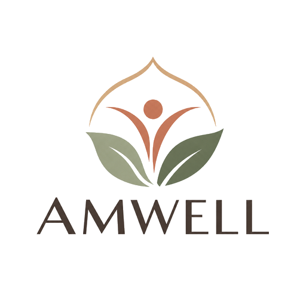

Mental Health & Well-Being Research
AMWELL Research Lab
Understanding American Muslim Well-Being. Advancing Mental Health. Supporting Communities.
AMWELL Research Lab explores psychological experiences, trauma exposure, and mental health risk and protective factors affecting diverse populations. Through culturally responsive research, we aim to advance scientific understanding and inform more effective approaches to mental health prevention and intervention.
Well-Being & Mental Health
Investigating well-being and risk and resilience factors that contribute to varied outcomes, including the prevalence of mental health concerns such as trauma, anxiety disorders, obsessive-compulsive disorder (OCD), attention-deficit/hyperactivity disorder (ADHD), among others.
Emerging Adulthood
Exploring the developmental challenges, stressors, and psychological experiences of individuals transitioning into adulthood.
Religious/Cultural & Community Psychology
Understanding how cultural and religious identity, social environments, and the effect of community influence psychological well-being and mental health outcomes.